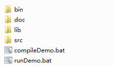

Download My World Flow Java SDK and Demo sdk_demo_1.0.zip
Unpack sdk_demo_1.0.zip to a folder, there will be 4 folders and 2 files in it:

| bin | java classes |
| doc | MWFClient java doc |
| lib | SDK dependency jars |
| src | MWFClient.java - the source file of MWFClient, the only class in MWF SDK. MWFDemoApplication.java - a demo application which calls MWFClient methods |
| compileDemo.bat | Run it to compile MWFDemoApplication.java |
| runDemo.bat | Run it to run the demo |
You may take MWFDemoApplication.java as an example to write your own MWF applications.